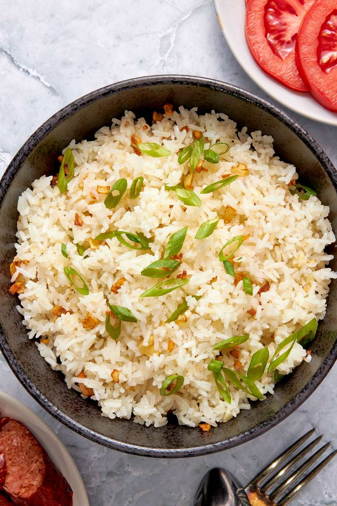

Home
Garlic Fried Rice

Description
It takes just a few simple ingredients to make this iconic Filipino dish.
Ingredients
- 3 to 4 cups cooked long grain white rice, 1 to 2 days old, refrigerated
- 1 teaspoon salt, divided
- 2 tablespoons vegetable oil
- 4 large cloves garlic, minced
- 1/4 teaspoon white pepper
- 1 thinly sliced green onion or a handful of chives, optional, for garnish
Steps
- Prepare the rice: Add the cooked, cold rice to a large mixing bowl. Use your hands to fluff the grains to break apart and loosen them up. Sprinkle 1/2 teaspoon salt all over the rice. Mix well with a spoon and set aside.
- Stir fry: Place a large skillet or wok over medium-high heat and add the oil. Once hot, add the garlic and cook for 30 seconds to 1 minute until crisp and light golden brown but not burnt. Add the rice. Using a spatula or cooking spoon, stir thoroughly to mix the garlic and oil into the grains. This should take about 2 minutes. Sprinkle the remaining 1/2 teaspoon of salt and the white pepper all over the rice. Stir the rice well for seasonings to blend, about 1 to 2 minutes.
- Serve: Garnish with green onion or chives, if desired. Serve warm as an accompaniment to breakfast, lunch, or dinner. Keep leftover garlic fried rice in a covered container, refrigerated. It will last for up to 2 days. Sinangag na kanin does not freeze well as it tends to get soggy.